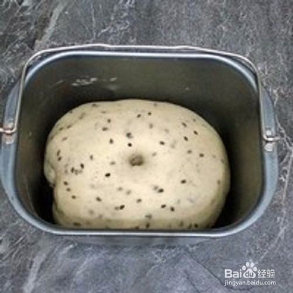

方法/步骤
-
试用后油法，将面团揉成团，面包机30分钟即可！牛奶要用凉的，因为面包机揉面温度较高！
 1
1 -
揉好的面团，用手抻开可以抻成薄一些的膜，有一定的扩展性！
 2
2 -
然后揉成团，放入面包机中就行第一次发酵，发酵约1小时，是原面团的2倍大！用手按下去无回缩就证明发酵好了！
3 -
发酵好的面团排气揉光滑，称重
 4
4 -
将面团平均分成5份，揉成光滑的面团！盖上保鲜膜醒发15分钟
 5
5 -
然后揉成你想放的模具中，没有就用纸拖，或可以不用也行。
 6
6 -
将烤箱中放一碗热水保持湿度，把面包生坯放入烤箱就行二次发酵，烤箱温度不易超过30度，发酵40分钟！
 7
7